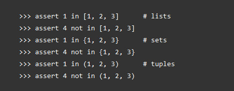
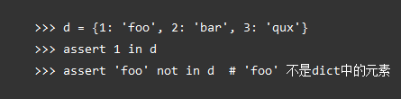
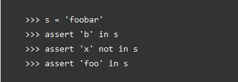
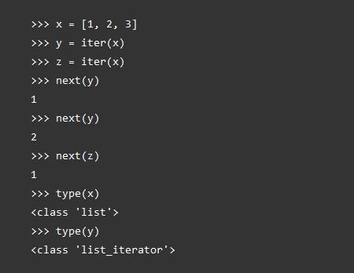
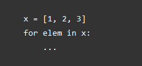
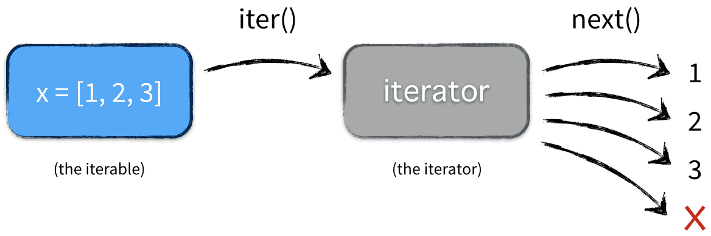

容器是一种把多个元素组织在一起的数据结构，容器中的元素可以逐个地迭代获取，可以用in, not in关键字判断元素是否包含在容器中。通常这类数据结构把所有的元素存储在内存中（也有一些特列并不是所有的元素都放在内存）。
在Python中，常见的容器对象有：
容器比较容易理解，因为你就可以把它看作是一个盒子、一栋房子、一个柜子，里面可以塞任何东西。从技术角度来说，当它可以用来询问某个元素是否包含在其中时，那么这个对象就可以认为是一个容器，比如 list，set，tuples都是容器对象：

询问某元素是否在dict中用dict的中key：

询问某substring是否在string中：

尽管绝大多数容器都提供了某种方式来获取其中的每一个元素，但这并不是容器本身提供的能力，而是 可迭代对象赋予了容器这种能力 ，当然并不是所有的容器都是可迭代的，比如：Bloom filter，虽然Bloom filter可以用来检测某个元素是否包含在容器中，但是并不能从容器中获取其中的每一个值，因为Bloom filter压根就没把元素存储在容器中，而是通过一个散列函数映射成一个值保存在数组中。
讲到迭代器，就需要区别几个概念:iterable,iterator,itertion：
itertion: 就是 迭代 ,一个接一个(one after another),是一个通用的概念，比如一个循环遍历某个数组。
iterable: 这个是 可迭代对象 ,属于python的名词，范围也很广，可重复迭代，满足如下 其中之一 的都是iterable:
for i in iterable__getitem__方法，比如list,str__iter__方法。可以随意返回iter(obj)的对象，并且返回一个iteratoriterator: 迭代器对象,也属于python的名词，只能迭代一次。需要满足如下的迭代器协议
__iter__方法，但是必须返回自身__next__。用来返回下一个值，并且当没有数据了，抛出StopIteration很多容器都是可迭代对象 ，此外还有更多的对象同样也是可迭代对象，比如处于打开状态的files，sockets等等。 但凡是可以返回一个迭代器的对象都可称之为可迭代对象 ，听起来可能有点困惑，没关系，先看一个例子：

x是可迭代对象，而y和z都是迭代器，它们从可迭代对象x中获取值。
这里x是一个可迭代对象，可迭代对象和容器一样是一种通俗的叫法，并不是指某种具体的数据类型，list是可迭代对象，dict是可迭代对象，set也是可迭代对象。
y和z是两个独立的迭代器，迭代器内部持有一个状态，该状态用于记录当前迭代所在的位置，以方便下次迭代的时候获取正确的元素。迭代器有一种具体的迭代器类型，比如list_iterator，set_iterator。
可迭代对象实现了__iter__和__next__方法（python2中是next方法，python3是__next__方法），这两个方法对应内置函数iter()和next()。__iter__方法返回可迭代对象本身，这使得他既是一个可迭代对象同时也是一个迭代器。
当运行代码：

实际的执行情况是：

定义了__iter__方法。
只有__iter__方法，没有__next__方法；并且__iter__方法返回的对象是一个迭代器。
定义了__next__方法和__iter__方法的对象。
定义了__next__和__iter__方法。
self：
所以从上面可以看出，只要是定义了__iter__方法的就是可迭代对象；而list就定义了__iter__方法，所以list就是一个可迭代对象；
但是list只定义了__iter__方法，而没有定义__next__方法；个人感觉是因为list没有必要定义__next__方法，因为list的__iter__方法返回的是一个迭代器对象，而迭代器中是定义了__next__方法的；并且也正因为list的__iter__方法返回的是一个迭代器对象，使得list可以被一直调用，而不像迭代器那样当next完了以后就不能继续“运行”了。
而迭代器就是__iter__和__next__方法都定义了的对象。
生成器其实是一种特殊的迭代器，不过这种迭代器更加优雅。它不需要再像上面的类一样写__iter__()和__next__()方法了，只需要一个yiled关键字。 生成器一定是迭代器（反之不成立），因此任何生成器也是以一种懒加载的模式生成值。
生成器表达式是列表推倒式的生成器版本，看起来像列表推导式，但是它返回的是一个生成器对象而不是列表对象。